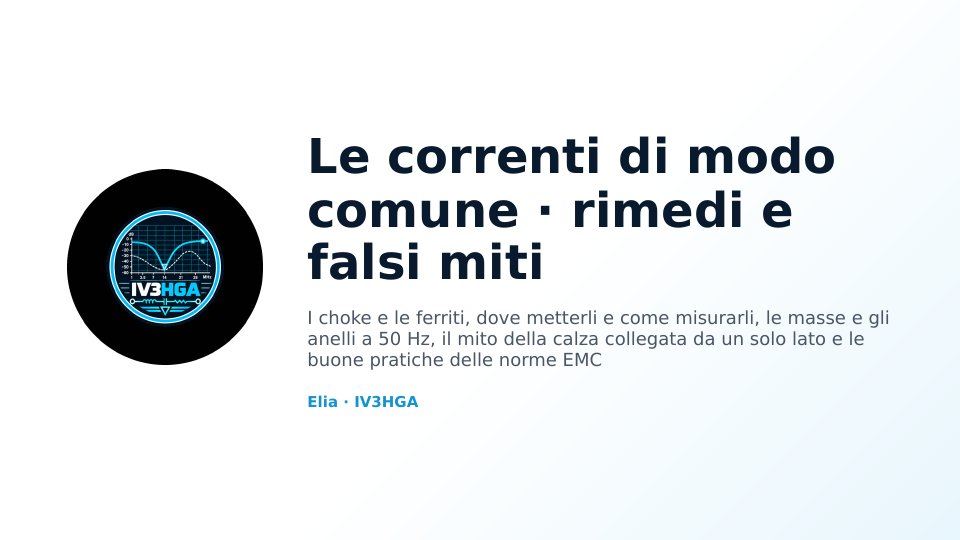

Capitolo 12 · Modulo 1
Le correnti di modo comune: cosa sono
- Modo differenziale e modo comune
- Le tre correnti del coassiale
- Il dipolo in coassiale e la lunghezza del cavo
- Sintomi in TX e in RX, sonda di corrente
Queste sconosciute che sono spesso metà dei nostri problemi: cosa sono, da dove nascono, come si misurano e si bloccano, le masse, gli anelli a 50 Hz e il falso mito della calza collegata da un solo lato.
